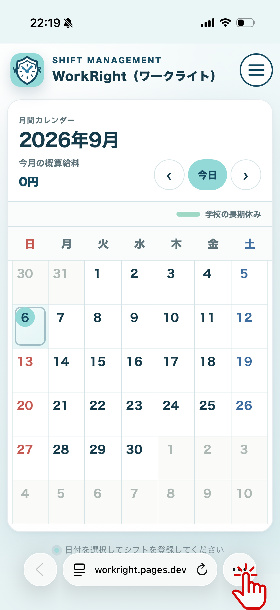
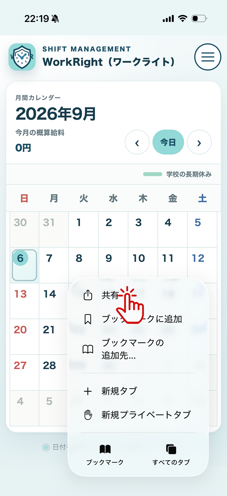
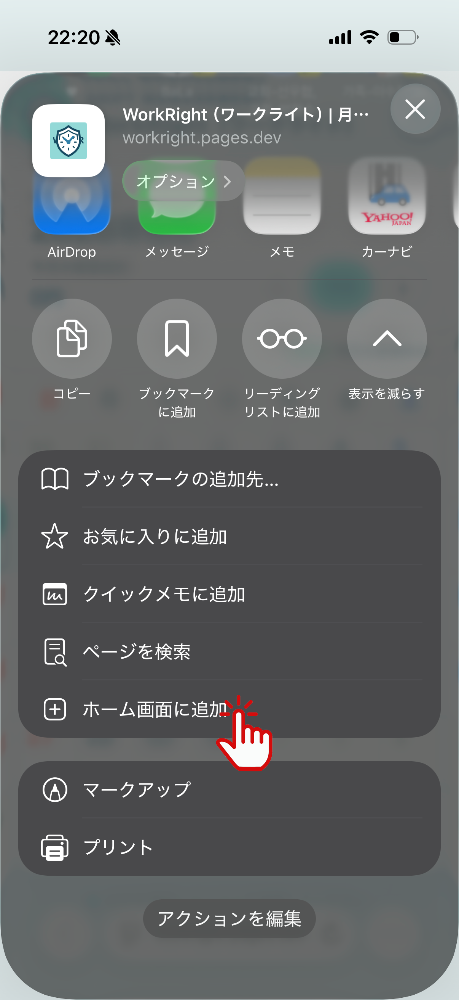
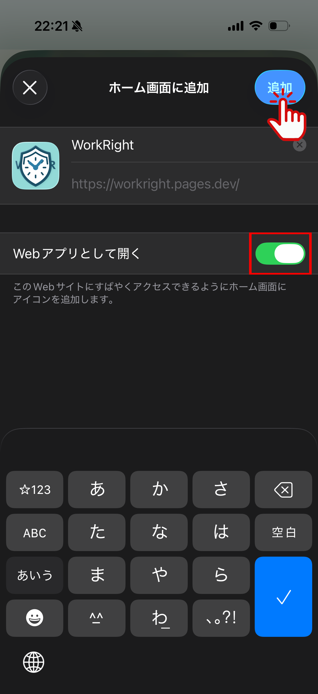
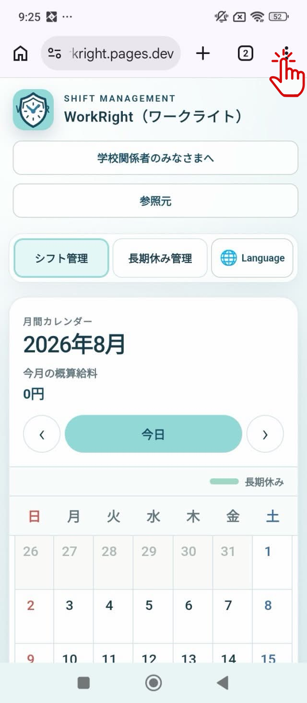
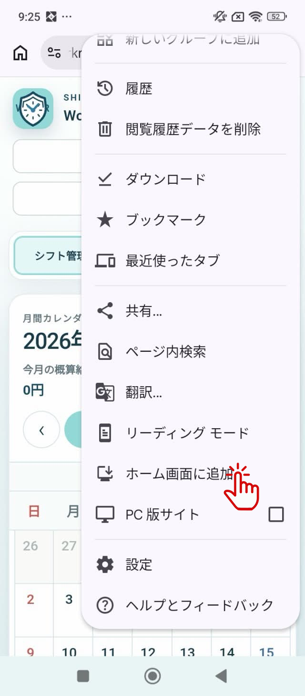
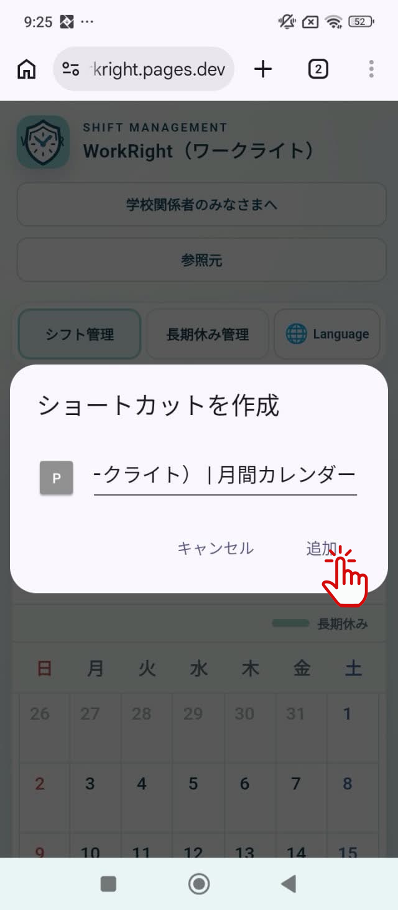

SCHOOL GUIDE
学校関係者のみなさまへ
このページは、留学生へ本アプリを案内する学校関係者向けの導入・利用ガイドです。
導入前に確認すること
- 学生本人の在留資格と資格外活動許可の内容を確認してください。
- 学校の長期休みとして登録する期間は、学校の学則で定めた長期休業期間と一致させてください。
- 本アプリのURLは、学校が案内する正しいURLを学生へ共有してください。
- 学生本人が継続して使用する端末とブラウザで開くように案内してください。
学生への導入手順
-
QRコードを読み取る
学生本人のスマートフォンで、学校が掲示または配布した本アプリのQRコードを読み取ります。
-
標準ブラウザでアプリを開く
iPhoneではSafari、AndroidではChromeを使用して、QRコードから読み取ったページを開きます。
※iPhoneでもChromeを利用することはできます。
-
ホーム画面へ追加する
iPhoneの場合
-
Safariのメニューボタンを押します。

-
Safariの共有ボタンを押します。

-
「ホーム画面に追加」を押します。

-
「Webアプリとして開く」をオンにし、「追加」を押します。

Androidの場合
-
Chromeのアドレスバー右側にあるメニューボタンを押します。

-
「ホーム画面に追加」を押します。

-
「ショートカットを作成」を押します。

-
「追加」を押します。

-
Safariのメニューボタンを押します。
-
ホーム画面からアプリを開く
ホーム画面に追加されたアイコンを押し、シフト管理画面が開くことを確認します。
基本的な利用方法
確認する項目を押すと、操作方法が表示されます。
シフト管理 シフトの登録・編集・削除
登録方法
-
勤務日を選択する
「シフト管理」のカレンダーで、シフトを登録する日付を押します。
-
勤務内容を入力する
バイト名、開始時刻、終了時刻、時給を入力します。休憩がある場合は休憩開始時刻と休憩終了時刻を両方入力し、必要に応じてメモを入力します。
-
シフトを登録する
「シフトを登録」を押します。登録したシフトは、同じ画面の「登録済みシフト」へ開始時刻順に表示されます。
編集方法
-
登録日を選択する
カレンダーで、編集するシフトが登録されている日付を押します。
-
編集するシフトを選択する
「登録済みシフト」から対象のシフトを確認し、「編集」を押します。
-
変更内容を保存する
入力欄の内容を変更し、「変更を保存」を押します。
削除方法
-
登録日を選択する
カレンダーで、削除するシフトが登録されている日付を押します。
-
削除するシフトを選択する
「登録済みシフト」から対象のシフトを確認し、「削除」を押します。
-
削除を確定する
確認画面に表示されたバイト名を確認し、削除を確定します。
学校の長期休み管理 学校の長期休みの登録・編集・削除とカレンダー表示
登録方法
-
学校の長期休み管理を開く
画面上部の「学校の長期休み管理」を押し、「学校の長期休み追加」を押します。
-
学校の長期休みの内容を入力する
学校が学則で定めた長期休業期間に基づいて、学校の長期休み名、開始年月日、終了年月日を入力します。必要に応じてメモを入力します。
-
学校の長期休みを登録する
「学校の長期休みを登録」を押します。登録した内容は、開始日が新しい順に表示されます。
編集方法
-
編集する学校の長期休みを選択する
「学校の長期休み管理」の一覧から対象の学校の長期休みを確認し、「編集」を押します。
-
変更内容を保存する
学校の長期休み名、開始年月日、終了年月日、メモを変更し、「変更内容を保存」を押します。
削除方法
-
削除する学校の長期休みを選択する
「学校の長期休み管理」の一覧から対象の学校の長期休みを確認し、「削除」を押します。
-
削除を確定する
確認画面に表示された学校の長期休み名を確認し、削除を確定します。
カレンダー上の表示
「シフト管理」へ戻ると、登録した開始日から終了日までの日付にオレンジ色の線が表示されます。この線が表示されている範囲が学校の長期休み期間です。
勤務時間の警告 赤色警告と黄色警告の見分け方
赤色の警告
勤務時間の上限を超えている日です。通常期間は「直前7日間の勤務時間が28時間を超えています」、学校の長期休み期間は「学校の長期休み期間の勤務時間が8時間を超えています」と表示されます。
日付を押すと、集計期間、合計勤務時間、上限、超過時間を確認できます。表示月に赤色警告がある場合は、月間概算給料の下にも「法的問題が発生する警告があります」と表示されます。
黄色の警告
同じ時間帯に重複しているシフトがある日です。日付を押すと「重複したシフトがあります。」と表示されます。登録内容を確認し、誤りがあるシフトを編集または削除してください。
警告が重なっている場合
勤務時間超過とシフト重複が同じ日にある場合は、赤色の勤務時間警告が優先してカレンダーへ表示されます。
概算給料 月間・日間・シフト別の金額と内訳
月間概算給料
カレンダー上部の年月付近にある「今月の概算給料」で、表示している月の合計を確認できます。
日間概算給料
カレンダーの日付を押すと、「この日の概算給料」で選択した日の合計を確認できます。
シフト別概算給料
「登録済みシフト」の各シフトに表示される「概算給料」で、シフトごとの金額を確認できます。
概算給料内訳
各シフトの「概算給料内訳」を押すと、基本賃金、深夜勤務時間、深夜割増額、シフトの概算給料を確認できます。時間外割増と休日手当は計算対象外です。
入力データの取扱い
- シフト、時給、メモ、学校の長期休み、選択言語は、使用しているブラウザ内に保存されます。
- 入力データを外部サーバーへ送信する機能はありません。
- アカウント、ログイン、クラウド保存、他端末との同期機能はありません。
- 別の端末または別のブラウザでは、保存済みデータを引き継げません。
- ブラウザの保存データを削除すると、登録内容も削除されます。
学生へ必ず説明すること
- 勤務時間の警告は自己確認用であり、実際の許可条件や適法性を確定する表示ではありません。
- 実際に働ける条件は、学生本人の資格外活動許可書または在留カードの記載で確認する必要があります。
- 学校の長期休みは、学生が任意に決めた休みではなく、学校の学則で定めた長期休業期間を登録します。
- 表示される金額は概算給料です。時間外割増、休日手当、交通費、税金、社会保険料は計算対象外です。